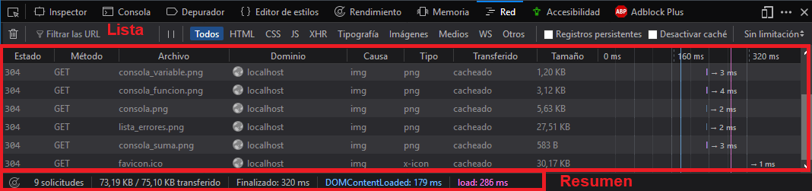
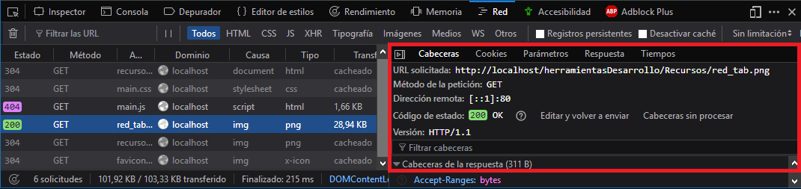
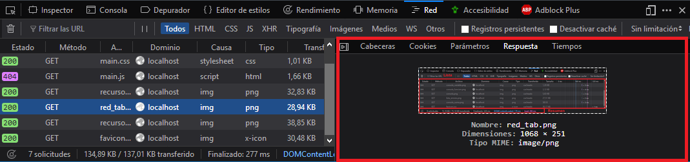
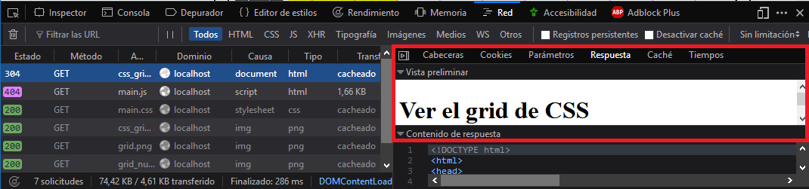
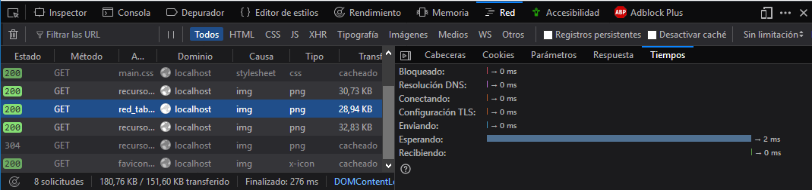

Uno de los apartados que nos encontraremos en las herramientas de desarrollo es el de red, aquí podemos ver todo lo que se está cargando en la página web, nos muestra cuánto tarda en cargar, que tipo de elemento es, en qué estado se encuentra, etc.
Lo primero que nos encontramos al abrir la pestaña de red es una lista de los recursos y un resumen de los mismos:

Si hacemos click en uno de los recursos, se desplegará una pequeña ventana donde podremos obtener más información acerca de ese recurso concreto.
En esa ventana veremos varias pestañas, y cada una de ellas se corresponde con un tipo de información concreta acerca de ese elemnto, la primera que vemos es la cabecera, que ofrece información básica acerca de la solicitud:

La siguiente pestaña es la de respuesta, que es lo que se está devolviendo, en el caso de una imagen aparecerá la propia imagen:

Si el elemento es de tipo HTML, la pestaña respuesta también incluirá una vista previa del documento HTML:

La última pestaña es la de tiempos, que muestra el tiempo de respuesta dividido por etapas de esa solicitud :
